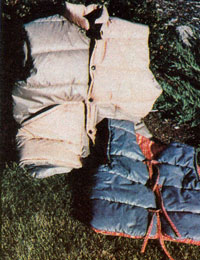

I originally intended to discard the nylon shell and simply use the polyester batting as stuffing for holiday craft items. However, upon arriving home and examining my "find", I discovered that many of the sections were quite large . . . and it seemed downright wasteful to tear them apart. Well, I gave the matter a little thought, and now the biggest scrap pieces warm my husband and me as we stroll about in our new fiberfill vests! The extra thermal layer helps to keep us warm indoors and out . . . yet adds no appreciable weight and doesn't restrict our activity.
If a cold draft is creeping into your dwelling, you might want to stitch up a couple of these cozy, lightweight, sleeveless jackets, too. It'd be hard to imagine a much less expensive way to keep the winter chill at bay.
My husband's vest is based upon a pattern purchased from my favorite fabric shop for $2.25 (I used McCall's No. 6848, but any style that appeals to you will work just as well). I chose the largest remnant for the vest's back and used smaller pieces for the front of the waistcoat. (Each section of material was a different color, so I simply selected hues that complemented each other.) When making the vest's lining, I pieced together some of the nylon stripped from the polyester batting of smaller scraps.
Once the fabric was spread out, I pinned the pattern pieces to it (making sure the quilted stitching that secures the nylon to the batting would run horizontally in the outer layer of the finished garment) . . . cut the sections out . . . and followed the pattern's instructions for sewing the vest together. Some heavy-duty fasteners (purchased for $1.75) finished the job, and I was able to present my husband with a "new" downlike vest that cost me less than $5.00 to make!
I assembled my own winter attire in the same manner, although the out-of-print Butterick pattern I used (which was lent to me by a friend) was a bit simpler . . . having no collar, pocket or snaps. And, since I wanted a bright ly colored lining in my vest, I dug up a scrap of flannel left over from an earlier sewing project (rather than use the nylon remnants for that purpose) and fashioned a few ties-to secure the front of the jerkin-out of the same material. My vest cost me less than 50 cents (for "my half" of the sleeping-bag mill ends) . . . but even if I had bought the pattern and the flannel, the total cash outlay for my comfy creation would still have been well below the $38 price that such quality garments go for in sporting goods stores!
My husband and I have been so pleased with our new winter garb that I'm currently stitching up a few of the vests to use as gifts for our friends. And, in my quest for additional supplies, I've discovered that salvage clothing stores and thrift shops arc worthwhile hunting grounds. Or, if you live near a large manufacturer of camping gear, you might be able to get your mill ends there. (I've found that many such factories are glad to give the remnants away!) Just look in your phone directory's Yellow Pages under "Garment Mfg.", "Sleeping Bags-Whol. & Mfrs.", and "Sporting Goods-Whol. & Mfrs." to locate potential sources.
I'm sure that once you've stitched-and worn-one of these attractive vests, you'll come up with other uses for sleeping-bag scraps (they'd make great booties or quilts, for example). And-if you enjoy fashioning the thermal wear-you could probably sell your products . . . and make some pocket money for the holidays!
|
 |
|
|